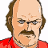
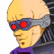

ウィリー 「どうにも、解せんな」
 カイン 「やだな。命令書は見せたでしょ」
カイン 「やだな。命令書は見せたでしょ」
ウィリー 「貴様のようなガキが、このフォートレス２機の受取人だと？」
カイン 「一度の説明で理解できないのは馬鹿のしるしだ」
ウィリー 「・・・貴様の所属をもう一度」
カイン 「うるさいよ」
カイン、ナイフでウィリーの首を刺す。
ウィリー 「ぐ・・・っ」
カイン 「こっちはマシンが無くてイライラしてるんだ。年寄りのつまらない決まり事に付き合ってられないんだよ。おっと、・・・やめてよね。こっちは正式の命令書を持ってる。グレイゾンはあんたらの上位組織なんだからさ」
ウィリー 「グレ・・・ユ・・オ・・・」
カイン 「さぁて、迎えに来たよ。サテュロス。・・・ブレイズ」
カイン 「それに、オルダス・ダーレスさん・・・だっけ？」

オルダス 「・・・仕事が粗いな、お前さん」
カイン 「馬鹿のために作られたルール、いちいち守ってられないよ。オルダスさんもそうだろ？」
オルダス 「ルールを守ってるヤツがお利口さんだと褒められるぜ？」
カイン 「馬鹿を従順に育てる口実だよ、そんなの」
タイトル
|
− Fly me to the moon − |
 ボッシュ 「こんな長閑な都会の街で足留めを喰らうとはな」
ボッシュ 「こんな長閑な都会の街で足留めを喰らうとはな」
 ケネス 「今、ハワードのおっさんが月で政談してるんだ。公社のシャトルの件もある。月で顔を合わす訳にゃいかねぇわな」
ケネス 「今、ハワードのおっさんが月で政談してるんだ。公社のシャトルの件もある。月で顔を合わす訳にゃいかねぇわな」
ボッシュ 「とは言え、のんびりしてたら、追っ手の足並みが揃う」
ケネス 「ハワードのおっさんの言うとおり、俺達は所詮、テロリスト。敵もテロリストみたいなモンだ。・・・最終的には政治と金が世界を動かすんだ。スポンサー様に倒れられちゃ困る」
ボッシュ 「珍しく、大人の発言だな。・・・ニヤけてなけりゃ、な」
ケネス 「へっへ。わっかるぅ？ 何しろ、隠者生活が続いてたからね。都会の空気が懐かしくってよ」
ボッシュ 「まあ、これからの行程を考えれば、これが最後の休暇になるかも知れんからな。たっぷり楽しめ」
ケネス 「お前さんは艦に残るんだろ。酒の一本でも土産に買ってくるよ」
ボッシュ 「火星ほどじゃないにしろ、警察には目を付けられてる。注意しろ・・・よ」
ボッシュ 「・・・早い」
ケネス 「おう、アベル。いつまでトレーニングしてるつもりだ？ 神様がくれた休日だぜ？ シャヒーナをデートに誘うなり何なり、有意義に使えよ」
 アベル 「け、ケネスさん。いや、あの・・・」
アベル 「け、ケネスさん。いや、あの・・・」
ケネス 「しょうがねえなあ。ここは一つ、おっちゃんが小遣い出してやるから」
アベル 「いや、あの、別にそう言うんじゃなくてですね」
 ハインツ 「じゃあ、ケネス。その小遣い、俺にくれよ」
ハインツ 「じゃあ、ケネス。その小遣い、俺にくれよ」
ケネス 「お前は給料出てるだろーが」
ハインツ 「アベルだって出てるよッ」
ケネス 「・・・何？」
アベル 「出てます」
ケネス 「それは聞いてないぞ」
テリー 「は。何だァ？ ここは託児所か？」
ハインツ 「誰だ？ お前？」
テリー 「は。こんなトコロで、ちゃんと給料出るのかねェ？」
ケネス 「・・・アンタかい？ テリー・カティアールってのは」
テリー 「は。知ってるって事はパイロットか？ オマエ」
ハインツ 「誰だよ？ コイツ」
ケネス 「スポンサーから支援金が出たんでね。戦力補強としてボッシュが雇った」
アベル 「傭兵・・・ですか」
テリー 「おうさ。”大空の蛇”と言やァ、地球じゃ知らないヤツはいないんだがな・・・」
ハインツ 「マシン乗りなら、ここじゃ俺達が先輩だぜ。口のきき方には気をつけな」
テリー 「オマエみたいなガキがパイロットとはな。は。先が思いやられる。口のきき方、教えてやるよ」
 ハワード 「ご無沙汰しております。サー」
ハワード 「ご無沙汰しております。サー」ジュゼッペ 「サーはやめたまえよ、ハワード君。私はもう現役じゃない。まだ、特使として良いように使われているがな」
ハワード 「は。今回の調印仕事、月までわざわざ御足労を願いまして」
ジュゼッペ 「いや、そんな事はいい。それより、２つばかり聞いて貰いたい事がある」
ハワード 「最善を尽くします」
ジュゼッペ 「ひとつは、私に娘がいるのだが」
ハワード 「存じ上げませんでした」
ジュゼッペ 「出来の悪い娘だが、私には可愛くてな。軍隊ごっこに夢中になってるらしい。・・・議会軍へ口利きが出来るようにしてくれと言い出しおった」
ハワード 「将補ぐらいの地位なら、１週間もあればご用意させていただきます」
ジュゼッペ 「すまないね。その件はまあ、適当に処理してくれ。本当に口出しが出来ない程度でな」
ハワード 「心得ております」
ジュゼッペ 「それともうひとつ。ユニオンの中に、海賊に出資している馬鹿がいるらしい」
ハワード 「海賊と申しますと、例のアンセスターへ、という事ですね。それが事実だとすれば、由々しき事態です」
ジュゼッペ 「うむ。それを調べて欲しい。この区域へ公社のシャトルを向かわせた者がいれば、それが犯人だ」
ハワード 「調べた後、直ちに報告いたします」
ジュゼッペ 「助かるよ。私にも君のような有能な補佐がいればいいのだがな」
ハワード 「ロイド副議長を棺桶まで案内した暁には、是非お声を。すぐに馳せ参じます」
ジュゼッペ 「ああ。仕事中にわざわざ呼びつけて済まなかったね。・・・例の、区民による所属分け、頑張ってくれ」
ハワード 「努力いたします」
ハワード 「・・・ディベラ特使が無能で助かったよ」
 ルーシアス 「区分けの件、可決すると思ってらっしゃいますね」
ルーシアス 「区分けの件、可決すると思ってらっしゃいますね」
ハワード 「今の宇宙は、セグメント内でもパーノッド派とリカード派に分かれている。不法居住者も、戦闘員と非戦闘員では扱いが違う。セツルメントやブロックで所属を決めつけるなんて都合の良い法案が簡単に通るはずもない・・・。大衆のコントロールは連中の生活を脅かさない事が前提だと言うのに」
ルーシアス 「でも、シャトルの話が出た時はヒヤッとしました」
ハワード 「ルーシアス。お前が動揺した事の方が、私には何十倍も脅威だったぞ」
ルーシアス 「はい。申し訳ありませんでした。先生」
ハワード 「何度も言うようだが、感情は殺せ。感情など、膨大な知識の前に変化を強いられる頼りない存在でしかない。まして、政治には不要。ただ判断を鈍らせる。正しい判断をするために必要なのは、知識と、知性だ」
ルーシアス 「はい。先生」
ハワード 「とりあえず、傘下から１人。スケープゴートを出せ。ロンチァン副委員長が適任だな。・・・シャトル便と裏切り者の汚名は彼に被ってもらう」
ルーシアス 「直ちに手配します」
ハワード 「うむ」
テリー 「よ。雄ガキが多いのは最悪だが、女の子が若いのは悪くないね。ちょっと若すぎるようだが」
 シャヒーナ 「・・・また軽いのが来たわね」
シャヒーナ 「・・・また軽いのが来たわね」
 アン 「また？ ハインツは馬鹿だけど軽くないわよ」
アン 「また？ ハインツは馬鹿だけど軽くないわよ」
ハインツ 「ば・・・！？」
シャヒーナ 「・・・」
アン 「・・・なに？」
シャヒーナ 「何でもないわ」
アベル 「で、あのさ。・・・もし、艦内に残るんじゃなければ、せっかくの休日だし、買い物にでも・・・」
シャヒーナ 「そう誘えってケネスが言ったのね」
アベル 「あ・・・、その・・・」
シャヒーナ 「いいわ。外の空気は吸いたいし、かと言って指名手配が解かれてる訳でもないだろうし」
アン 「なんだかんだ言って、うまい事やってるじゃないの」
ハインツ 「と、言う訳でスナン。俺達もだな・・・」
アン 「ハインツは馬鹿な上に軽いって言われたいの？」

アイキャッチ「Ｇ−ＧＵＩＬＴＹ」
シャヒーナ 「月がこんなに近いなんてね・・・」
アベル 「次に地球から遠くなったら、出発だって」
シャヒーナ 「・・・そう」
アベル 「あのさ、シャヒーナ。今日、街に誘ったのは別にケネスさんに言われたからとか、そんなんじゃなくて、その」
シャヒーナ 「知ってる」
アベル 「あ。・・・なら、いいんだ。うん」
シャヒーナ 「・・・あたしは言われたわ。アベルの居場所になれって」
アベル 「・・・ケネスさんに？」
シャヒーナ 「ずるいわね、アベルは」
アベル 「え？ な、なんで」
シャヒーナ 「みんながアベルを心配する。・・・本当に助けが必要なのは、心配をしてもらえない人かも知れないのに」
アベル 「・・・ごめん」
シャヒーナ 「でも、あの人は、人に心配されたくないんだわ」
アベル 「・・・シャヒーナは？」
シャヒーナ 「・・・何？」
アベル 「シャヒーナは、誰かの助けを必要としてる？」
シャヒーナ 「アベルみたいに弱くもないけど、あんなに強くも振る舞えないから、多分、必要なんでしょうね」
アベル 「僕みたいに弱いと、助けに、その・・・、ならないかな？」
シャヒーナ 「強さや行為だけが、救済ではないでしょう？」
アベル 「え・・・」
遠くない街で爆発が起きる。
シャヒーナ 「なに！？」
カイン 「さーて、ネズミを燻り出すよ」オルダス 「お前サン。自分で何をやってるか、わかってるのかね？」
カイン 「わかってるよ。海賊がこのセツルメント周辺に逃げ込んだのはわかってるんだ。手当たり次第に破壊していけば、イヤでも出てくるよ」
オルダス 「とんだバカ餓鬼だな。・・・命令書もなく、攻撃目標でもない区域を攻撃してるんだぞ」
カイン 「あっは。海賊を仕留めてくれば結果オーライさ。いいんだよ。イヤなら引っ込んでれば」
オルダス 「まあ、俺は上司から命令されて渋々従っただけだ。戦闘自体は喜んでやらせて貰う」
アン 「なんでケネスが艦にいないのよぅ！」
ハインツ 「スナンがくっついてくのが迷惑だったんだろ？」
アン 「あんたが引き留めたのが悪いんでしょ！？」
ハインツ 「ぐっ・・・！ そ、それより、ケネスを探しに行くなら、その、手伝うぜ」
アン 「はぁん。ありがと。手分けして探すならね」
ハインツ 「な、なんだよそのっ」
爆音。
女 「きゃああああっ！？ 何！？ 何よアレ！？」
ケネス 「・・・はは。こーゆー時、俺の傍にいりゃ安心って台詞まで思い付くんだけどな」
女 「ちょっ、早く逃げないと」
ケネス 「悪いね。急用が出来た」
女 「えっ！？ ちょっと！？ 女を置いて逃げるワケ！？ ちょっとぉ！」
ケネス 「ごめんなッ」
ボッシュ 「非戦闘区域で無差別攻撃だぞ。・・・正気の沙汰とは思えンな。正規軍ではないにしろ、俺達を誘き出すためにココまでやるのか？」
ボッシュ（声） 「可能なら、セツルメントから引き離して戦え」
テリー 「は。お優しい事で。出ていく必要もなければ、街の破壊を食い止めることもないってのにな」
ボッシュ（声） 「傭兵なんだったら、仕事はきっちりやれ。俺達が正義の味方だって、マスコミへのアピールもある」
テリー 「仕事はきっちりやるから、ギャラもたぁんと弾んでくれよ。テリー・カティアール、出るぜ」
ハインツ 「ヴォーテックス、行くぜ！」
カイン 「へえ、２機だけでいいの？ １機は新顔？ ガディを改造しただけか」オルダス 「手柄になりそうな方を貰うぜ、上官殿」
ハインツ 「ヴォーテックスの新型か！ 厄介だけどよッ」
テリー 「は。そんじゃあ俺はデカブツだ」
カイン 「あっは。外装だけＧにしたって、ね」
オルダス 「火力、スピード、パイロット、全ての点でお前じゃ勝てないさ」
アベル 「もう始まってる！」
ケネス 「よ。先に行くぜ。・・・サイファー出る！」
アベル 「アベル、ギルティ出ます！」
ハインツ 「ひたすら回避しかッ！？ 攻撃する隙もないのかよォッ！？」オルダス 「悪いけど、頭ン中の電卓が叩き出したんだよ。勝率１００％をな」
テリー 「なんだッ！ コイツっ！ 偏光領域が半端じゃねえッ！ かと言って・・・ッ！！」
カイン 「あはははははははは。あっは。お前、遊び相手にもならないね。死んじゃえよ」
割り込んでくるギルティ。
アベル 「テリーさんッ！ 援護してくださいッ！」
カイン 「来たな、僕のアサルトぉ！ 他人にあげるぐらいなら壊した方がまだマシだねッ」
テリー 「は。あのちびっ子もパイロットかよ。世も末だぜ」
ハインツ 「やべやべやべやべやべえってぇっ！」オルダス 「王手・・・、と思ったら新手か」
ケネス 「早いのは嫌われるぜ」
オルダス 「サイファー・・・！ ケネスか」
ケネス 「およよ。どちらさんだっけな？」
オルダス 「亡霊だよ・・・。お前サンに殺された、な」
ケネス 「殺したヤツは山ほどいてね。いちいち思い出せねーんだわ」
オルダス 「思い出さなくていいさ。今から教え込んでやる」
アベル 「この気配・・・、いつかの、この機体に乗ってたパイロット！？」
カイン 「お前！ あの不愉快なパイロットッ！」
アベル 「偏光領域でもピアシングレーザーなら効果はあるはず！」
カイン 「ディバイダァァー！？ この巨体じゃ狙い撃ちじゃないか！ くそッ、このポンコツ役たたずめッ！！」
アベル 「さすがにっ、威力は半減どころか・・・ッ」
カイン 「オルダス！ 撤退する！ 援護しろ！」
オルダス 「ちっ、バカ餓鬼が。・・・ケネス、次に会う時ァ決着だ。地球の守護神で会おうぜ」
ケネス 「あーあ。女の声以外思いださねえ俺が思い出しちまったよ。オルダス」
アベル 「逃がしませんよッ！」
ケネス 「アベルッ！ 追うなッ！ 宇宙空間じゃデカブツは鈍足ってハンディがなくなるッ！」
アベル 「くっ・・・、は、はい！」
テリー 「は。敵もバケモンだが・・・、コイツらもバケモンか」
ケネス 「いいや、マシンの性能に助けられてるのさ。操縦も口のきき方もなってないンでね」
テリー 「は。参ったね・・・、こりゃ」
シャヒーナ （こうして、私たちは補給を受け、地球降下のために月へと飛んだ）
シャヒーナ （月の世界が・・・、眼下に広がる）

ナレーション 「アベル達はエクレシアと協力して、地球を守護する衛星兵器に迫る。だが、戦いを目前にして、合流を急いでいるのは敵も味方も同じだった。ついに相見えるザカリアとアベル。だがその勝敗はあまりにも決定的だった。次回、『生存闘争』 Ｇの鼓動が、今目覚める」